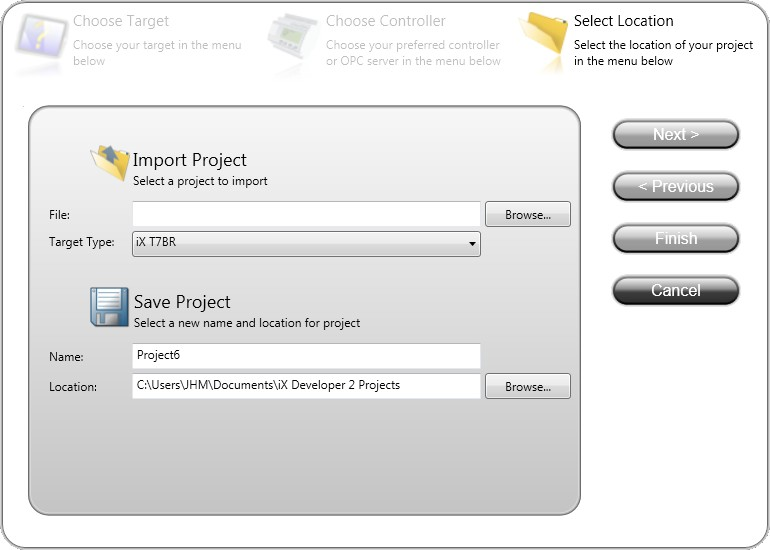
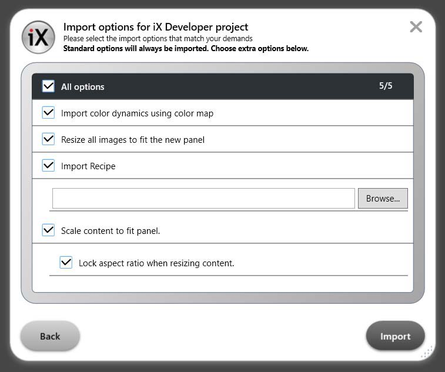
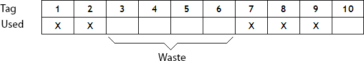
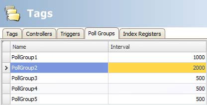
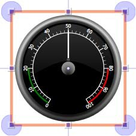

Working with Projects
This section describes iX Developer and explains how to work with a project for an HMI panel.
In iX Developer, ribbon tabs are used instead of menu commands. This reduces the number of steps needed to design complex components, and also supplies an attractive user interface.
Ribbon tabs are located in the top section of the tool window. Each ribbon tab holds one or several control groups. Each group contains a set of related controls. Controls are made to design screens, and to make settings for objects and controls in the project.
Creating a Project
A project can be created according to the following sections, but the work process can be adapted and rearranged if needed.
Connecting to a Controller
Establishing communication between an HMI panel and controller is necessary to allow operator observation and control. The larger the project is, the more important it is to ensure that there is a suitable communication design.
There is a built-in DEMO controller in iX Developer. It can be used for test and simulation purposes.
Related information |
|---|
Designing a Screen Set
It is important to organize the application well and to consider which functions are necessary. Start with an overall view and then work down to a detailed level.
A project contains a number of screens with objects that can exchange data with the controller. Screens can be arranged in hierarchies to achieve a structured application, or organized as sequence controls. When deciding which structure to use, consider how to best describe the process at hand and how to simplify procedures for the machine operator.
The complete application, or parts of it, can be tested in the development environment before downloading it to the HMI panel.
Related information |
|---|
Designing Additional Functions
Alarms
Alarms are used to make the operator aware of events that require immediate action. An alarm is set when a certain condition is met. An alarm condition is designed as a logical evaluation of a tag value. Alarms can be divided into groups to create an order of priority.
Related information |
|---|
Function Keys
Function keys can be used to perform actions and execute scripts. This allows operator control of data and screen functionality independent of which screen is active.
Related information |
|---|
Multiple Languages
Translation of texts and system texts can be performed directly in the application, or via export to a text file to be translated in other software. The file is imported to the application after translation. The application language can be changed in runtime, for example based on a tag value.
Note
Pre-translated system texts are provided with iX Developer. These texts are adapted for a PC, which means that they contain more strings than what is available for panel targets. This results in warnings when importing the system texts to projects created for a panel, but these warnings can safely be ignored.
Related information |
|---|
Security
Access to objects and actions in the project can be limited using security groups and user passwords.
Related information |
|---|
Text Library
With the text library function, text tables can be created, where values are linked to texts.
Related information |
|---|
Audit Trail
The Audit Trail function allows tracking of operator actions.
Related information |
|---|
Data Logger
Data can be logged and saved to file. Bit, 16-bit, 32-bit and Real (Float) values can be logged. Be aware that logging of data consumes system resources and memory.
Related information |
|---|
Scheduler
Setting and resetting digital tags in relation to the real-time clock can be performed using a scheduler, in order to control events in the process at special calendar times.
Related information |
|---|
Recipes
Recipes are used to set or save a predefined group of tags in one operation.
Values can be predefined or collected from the controller, and then saved to a recipe in the HMI panel. The operator can download the recipe at any time to the controller, which will start working with the recipe values. Recipe handling makes it possible to reuse large parameter sets, to improve efficiency of time critical production where a change of products must be made quickly. Recipe files can be created in the development project or with the HMI panel.
Related information |
|---|
Reports
The reports function allows adding excel report templates to the project.
Related information |
|---|
Importing an Information Designer Project
Existing Information Designer projects can be imported to iX Developer. Information Designer is the previous software used to design projects for the EXTER HMI panels.
Note
This is not applicable if there is no Existing Information Designer projects.
The import function is accessed from the Welcome page, displayed when starting iX Developer.
Select the Information Designer project file.
Select a name and location for the imported project.
Click Finish.
|  |
The project will be imported to the corresponding iX panel target. All screens will be imported and graphical objects in the Information Designer project will be converted to corresponding iX Developer objects. Some objects may not be supported.
Functions such as recipes and data logging work differently in iX Developer, and will have to be reconfigured in the imported project.
During the import, a log file of unsupported objects and functions is created. It can be saved to disk for future reference.
Note
If there is a crash when importing an Information Designer project, the problem could be solved by installing a hotfix from support.microsoft.com/kb/2461678.
Information Designer Import Settings
Since Information Designer objects do not always have an exact corresponding object in iX Developer, there may be more than one correct conversion action. In these cases, to increase the flexibility of the conversion, the desired conversion action can be chosen.
Before conversion, a dialog window will be displayed where the conversion options can be selected:
|  |
Option | Comment |
|---|---|
Import color dynamics using color map | Allows the specification of RGB colors to be used in analog dynamics. If you activate this option, you must provide a file called ColorMap.txt in the same folder that contains the Information Designer project. The file should contain a single line of text which is a comma separated list of 16 bit values (e.g.: 32799, 33760, 64512). Only use the color map if the signals used by the color dynamics in your Information Designer project can exceed the documented range of 0-15. |
Resize all images to fit the new panel | Resizes all images in the project to fit the new panel size, even if the project indicates that the images should not be resized. If not specified, images without the Stretch property are not resized. |
Scale content to fit panel | If the new panel size is different from that of the project being converted, the contents of screens will be scaled to fit the new panel size. |
Lock aspect ratio when resizing content is visible | Only available when Scale content to fit panel is selected. |
Importing an H-Designer/ADP Project
Existing H-Designer/ADP projects can be imported to iX Developer. H-Designer/ADP is the previous software used to design projects for the H-/PWS-series HMI panels.
The following software versions are required:
Software | Version |
|---|---|
ADP | 6.50 build 184 |
iX Developer | 2.0 or higher |
Exporting the H-Designer/ADP Project
First, the H-Designer/ADP project has to be converted to an a2i file from within ADP by following the steps below:
Select File/Export iX.
Select a name and location for the export file, and click OK.
A message box confirms that the export is finished, and after clicking OK, you are asked if you want to see the log file. The log file is saved to the same location as the project file.
The log file declares successfully converted items as well as unsupported objects and functions.
Importing the a2i File
Then, the exported file is imported into iX Developer using the import function that is accessed from the Welcome page, displayed when starting iX Developer.
Select the a2i file.
Select a name and location for the imported project.
Click Finish.
The project will be imported to the corresponding iX panel target. All screens will be imported and graphical objects in the H-Designer/ADP project will be converted to corresponding iX Developer objects. Some objects and functions may not be supported at all, and some objects and functions need reconfiguring in the imported project.
During the import, a log file of unsupported objects and functions is created. It can be saved to disk for future reference.
Limitations
All parts of the original H-Designer/ADP project will not be fully supported in iX Developer. For example, for objects that use individual controller registers for read and write, only the register selected for write will be connected. Also, patterns and other decoration of objects may not be included in the imported project.
The following functions and objects will not be converted, or will need reconfiguration:
Function | Comment |
|---|---|
Controller | Import of name list and addresses for the first two controllers in the ADP project is supported. Import of controller settings such as IP address and COM settings is not supported. Import of index registers is not supported. |
Macro and sub-macro | Not supported |
Recipes | Not supported |
Object | Comment |
|---|---|
Action push button | The graphical control will be imported but the actions need to be reconfigured. |
Alarm history table, active alarm list, alarm frequency table and alarm marquee | Not supported |
Animated graphic | Not supported |
Bar graph deviation | The graphical control will be imported but needs to be reconfigured. |
Day of week display | The graphical control will be imported but needs to be reconfigured. |
Dynamic ellipse and dynamic rectangle | Not supported |
Historical data table and historical event table | Not supported |
Moving sign | Not supported |
Multistate indicator | Not supported |
Pie graph | Not supported |
Set value push button | Not supported |
Seven segments | Not supported |
Trend graph | The graphical control will be imported but the curves need to be reconfigured. |
X-Y chart | Not supported |
Shape | Comment |
|---|---|
Arc | Not supported |
Free form | Not supported |
Parallelogram and solid parallelogram | Not supported |
Pie and solid pie | Not supported |
Scale | Not supported |
Shape | Not supported |
Solid polygon | The graphical control will be imported but needs to be reconfigured. |
Optimizing Performance
The following section presents a couple of issues to consider in order to optimize the iX Developer project. Some parts are related to the communication driver; other parts concern CPU load and flash operations.
Communication Performance
Signal Types
Tags used for driver communication can be static or dynamic. These are updated in different manners.
Static Tags
Static tags are updated continuously, even if they are not currently shown on the panel display.
Additionally, the HMI panel reads the following items continuously:
Alarm tags
Data logger tags
Multiple languages tags
Controller tags with value change events
The communication time is not affected by the following:
Alarm messages
Schedulers
Tags linked to function keys
Dynamic Tags
Dynamic tags are updated only when they are presented on the display. An analog numeric object serves as an example of when a dynamic tag is used.
Communication Design
This section describes how tags are read and how the reading can be optimized to make the communication between the HMI panel and the controller fast and efficient.
Keeping Tags in Consecutive Order
Define controller tags consecutively, for example M0.0-M11.7. If the tags are spread (e.g. I0.4, Q30.0, M45.3 etc.) a complete update will take longer time. The number of tags in each package depends on the used driver and information about this can be found in the driver help file.
Tag Packages
Tags to be transferred are not all transferred at the same time, but are grouped into packages. The number of tags in each package depends on the driver for the controller.
To make communication as fast as possible the number of packages should be minimized. Consecutive tags require a minimum number of packages, but it is perhaps not always possible to program it this way. In such cases there is a “waste” between two tags.
|  |
Waste is the maximum distance between two tags that can be kept in the same package. The size of the waste depends on the driver used, and is included in the driver help file, e.g as in the table below:
Driver x | Analog signals | Digital signals |
|---|---|---|
Number of signals/package | 29 | 124 |
Waste | 20 | 0 |
Bit-Addressed Words vs. Regular Bit Devices
In most drivers it is better to use bit-addressed words than regular bit devices, since you can fit more digital devices in one telegram when using bit-addressed words, than when using bit devices.
Example
Driver x | Analog signals | Digital signals |
|---|---|---|
Number of signals/package | 29 | 124 |
Waste | 20 | 0 |
This specific driver can have 29 analog devices or 124 digital devices in one telegram. If you use bit-addressed words in the selected driver, you can fit 464 (29 × 16) digital devices in one package. This is almost four times as many devices.
ASCII Strings
ASCII strings are transmitted in separate telegrams, and having a large number of strings will affect the communication performance negatively. If an ASCII string only has a small number of different string values, it may be a good idea to use the Text Library function in iX Developer with predetermined contents, thus minimizing impact on driver performance.
Related information |
|---|
Performance in the HMI Panel
It is important to understand that due to the complex nature of a running system, there are several things that affects the overall performance. The following list gives some examples of things to consider, when it is necessary to optimize the performance of the HMI panel:
Number of tags
Number of sampled tags in trend viewers and data logger
Number of alarms
Driver performance
Multiple drivers
Type of panel
Alarm list size
Size of pictures
Scripts
Recommended Limits
In order to optimize performance, it is recommended to limit the number of items in the project. The recommended limits depend on the type of panel, and are listed in the table below.
X2 base | iX TxB/X2 pro | iX TxC PC | |
|---|---|---|---|
Tags | 1000 | 2000 | 4000 |
Active Controllers | 3 | 10 | Unlimited |
Dataloggers | 10 | 25 | 50 |
Database Items | 50 | 700 | 2000 |
Alarm Items | 150 | 500 | 4000 |
Alarm Viewer Rows | 100 | 200 | 400 |
Alarm Database Max. Rows | 500 | 1000 | 4000 |
Screens | 100 | 500 | 1000 |
Objects on Screen | 150 | 400 | 500 |
Tags
Try to avoid keeping the tag constantly active. If scripts are used, then hooking up event handlers on value change event will also set the tag to be always active. Use the passive value change event when possible. The passive event will only trigger when the tag is active, and the tag can be deactivated when it is not in use. When the tag is deactivated the passive event will remain idle until the tag is activated.
The default setting in iX Developer updates all tags every 500 ms. If some tags may be updated less often, it is possible to assign them to a poll group with a lower update interval. Poll groups are configured in the Tags configuration page.
|  |
Assign and configure poll-groups with care. High poll-interval frequency affects the performance.
Usage of the following properties on tags will reduce performance. The tag should not:
be an array tag
be connected to more than one controller
be used in script mode
be a system tag
use data exchange
use any of these properties:
Access Right (other than ReadWrite)
Offset
Gain
Read expression
Write expression
Non volatile
Index register
Log to audit trail
Screens
Optimizing screen update time minimizes CPU load and flash operations. This can make a significant difference in graphic-intense projects that approach the limits of the panel’s capabilities.
Screen changes are carried out most efficiently through a show screen action, either on a function key or an object.
Screens with less content will in general load faster. Certain objects will take longer to load, such as an alarm viewer. If screens are frequently shown or used as a background, try to keep it as slim as possible.
Caching of screens have a great impact on screen switching times. The more screens that can be cached the more screens will load faster, hence it is preferred to keep RAM as low as possible to utilize it for screen caching. Large screens will take up more memory when cached and will possibly prevent smaller and more frequently used screens from being cached. It is possible to prevent screens from being cached by setting its Cached property to false. When utilized RAM reaches approximately 85% the application will start to remove screens from the cache in order to avoid the application from running low on memory. This implies that if the application utilize more than 85% without caching the application will not be able to cache any screens and therefore not experience faster screen switching times.
Trend Viewers and Data Loggers
Several trend viewers can show data from the same log item.
In order to optimize performance in the panel, it is strongly recommended to place all log items logged on the same frequency/event in the same data logger or at least reduce the amount of data loggers.
Try to avoid having one data logger for each trend viewer.
Data logging in general have impact on the performance. Reconsider the data logger settings, the log frequency and the amount of log items. Heavy data logging will increase the CPU usage and will influence performance across the whole application.
Data logging is queued up if more logging is done than the database can handle at the moment. If the queue reaches a too high level, the warning “Data logging has too high load. Datamightbe lost.” is shown on the screen in the top left notifier window. If the queue reaches a critical level, there is a risk that the system will malfunction. If this happens, alarm and data logging are turned off, the error message “Data logging is overloaded. Data logging is nowdisabled.” is shown in the dialog and the system tag Database Error Active is set. The system tag Database Error Message contains the error message.
The system tag is not reset by the system. It is up to the user to reset it when the system error is taken care of.
Alarm and data logging are turned on again when the queue is below the critical level.
Storage Media
If the storage media reaches a critically low level, there is a risk that the system will malfunction. If this happens, alarm and data logging is turned off. The error message “99% of disk used. Alarm logging is nowdisabled. Data logging is now disabled.” is shown and the system tag Database Error Active is set. The system tag Database Error Message contains the error message.
The system tag is never reset by the system. It is up to the user to reset it when the system error is taken care of.
Alarm and data logging are turned on again when the storage usage is below the critical level.
You can avoid this situation by using the Max Size setting for the database. When the limit is reached you will be informed by a warning message.
Database
If there is a risk of the database running out of storage media, then a warning is shown on the screen. If the usage reaches a critical level, risking the system to crash, alarm and data logging is turned off, an error message is shown and the system tag Database Error Active is set. The system tag Database Error Message contains the error message. Alarm and data logging are turned on again when the storage usage is below the critical level.
Gradients
Using objects with gradients creates a slightly higher load on the CPU. If a large number of objects use gradients, this will make the screen update time significantly slower. Pay special attention to objects with gradients that are updated frequently, e.g. a bar graph witha style with gradients connected toa tag that changes at short intervals.
Polygons
Avoid excessive use of polygons. Polygons are usually complex and are drawn each time the screen is shown, hence they will not benefit from caching the screen.
Buttons
From a performance perspective it is preferred to use styled buttons instead of the default button.
Transparency
Drawing transparent objects (circular meter, slider etc.) without transparency will result in improved performance. In order to do so these objects should not overlap other objects within their bounding box. Also, avoid gradients in backgrounds and dynamics on screens containing these types of objects.
|  |
A circular meter and its bounding box
Moving Objects with the Touch Screen
iX panels with touch screens do not have a built-in keyboard. All maneuvering is done with the touch screen by pressing distinctly with a finger. Because of the resistive touch technology, the screen can only apprehend pressing on one place on the panel at the time. Pressing two points at the same time is interpreted by the panel as a point midway between the two pressed points.
Operate Objects
For an object to react, it is necessary to specify the behavior, typically by assigning a tag and defining an action. All objects can have actions linked to mouse down, mouse up, mouse enter and mouse leave events. Some objects have a predefined behavior, like sliders setting values, but can also have actions linked to mouse down and mouse up events.
Button
Pressing a button triggers a click- and mouse button event.
Text Box
Pressing on a text box object displays a virtual alpha-numeric keyboard on the panel screen. Type a text using this keyboard and finish by pressing [Enter].
Analog Numeric
Pressing on an analog numeric object displays a virtual keyboard on the panel screen. The keyboard type depends on the format chosen for the Analog Numeric — String, Integer, Decimal, Hex or Binary. Enter a value using this keyboard and finish by pressing [Enter].
In runtime a validation of the value is done. If the value entered is out of bounds, the corresponding limit value for the object will be shown.
Slider
Pressing on the desired value position of a slider object sets it to the pressed position.
Peripherals
USB
External devices such as a USB hub, flash drive, mouse, or keyboard can be connected to the USB host port.
Ethernet
The HMI panel has built-in Ethernet port(s) for connection to controllers via TCP/IP. The number of ports varies by model.
Memory Card
An external memory card can be used as storage of e.g. pdf files, media files and databases to reduce used internal memory.
Limitations for Databases Location Setting: This setting is only made available for high performance panels with SD Card slot. It is also important to ensure the SD Card is already in the correct format (FAT32) before inserting it in the panel. If during startup an error message “Disk IO error” is displayed and the chosen Database Location is set to SD Card, please ensure the SD Card has an ample amount of space available on it.
If during the runtime of the panel, the SD Card is removed and the chosen location for the Database(s) is the SD Card then the panel will close the application and will continue to attempt to reboot until either an SD Card is reinserted into the panel or a project is downloaded to the panel with the location set to Hard disk. If the SD Card is chosen as the desired location to store the Database(s), during the transfer of the project to the panel the Audit Trail Database will not appear in the confirmation dialog of files to be kept on the panel. As a result, it will continue to use the existing Audit Trail Database. To avoid this the SD Card should be removed and the Audit Trail Database should be deleted via a PC. Any pre-existing scripts towards a database may not function as intended if the database location is changed and no build error or warning will be given.
Related information |
|---|
SD card tests iX Developer
Recommendations of use:
Always use Industrial Grade both for SD card and USB.
Use SD/USB with memory transfer rate x32/4.8 or higher.
Filling the whole SD/USB with data will effect the performance.
Tested brands:
Trancend Industrial 2GB.
SanDisk Ultra 4GB C:10.
SanDisk Extreme 64 GB C:4
Inodisk Industrial 2GB C:10.